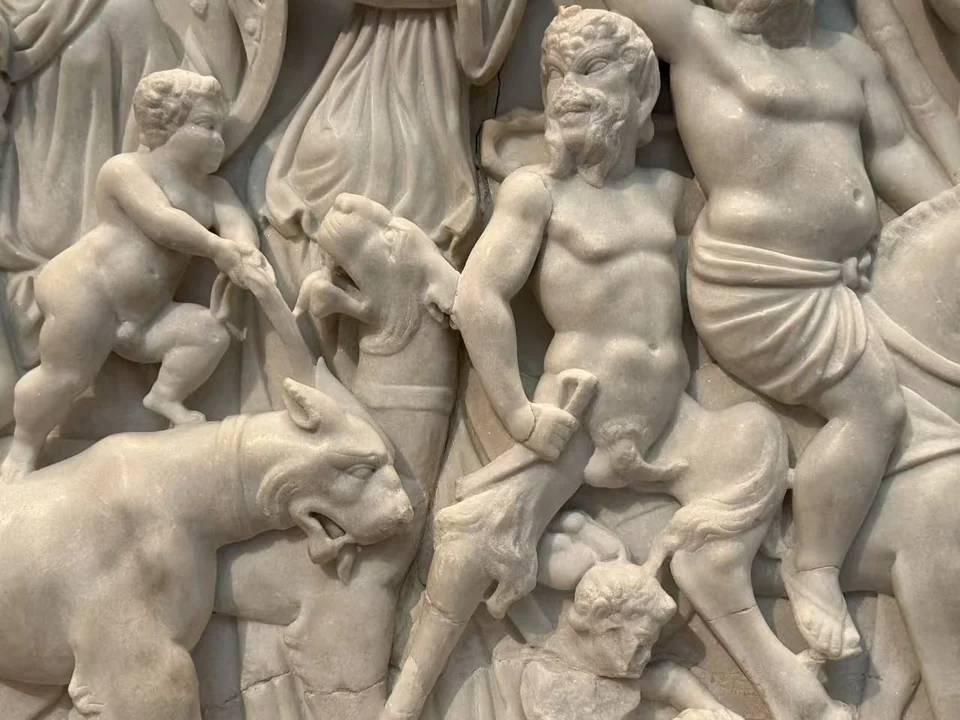
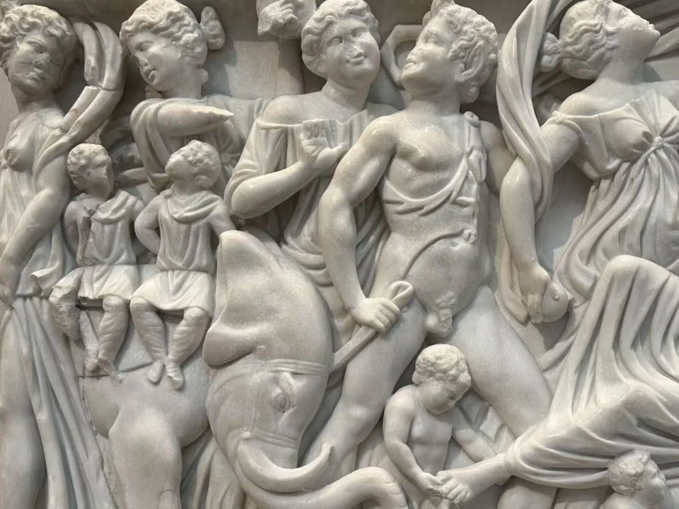
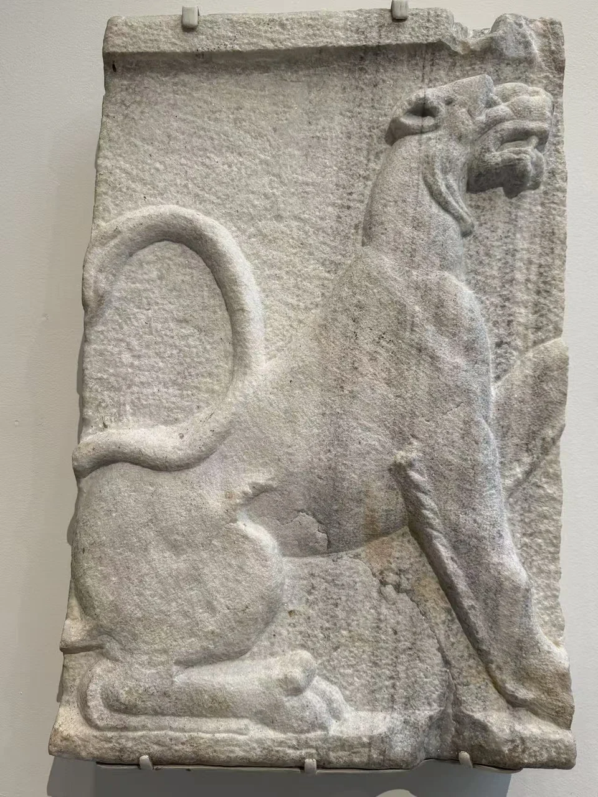
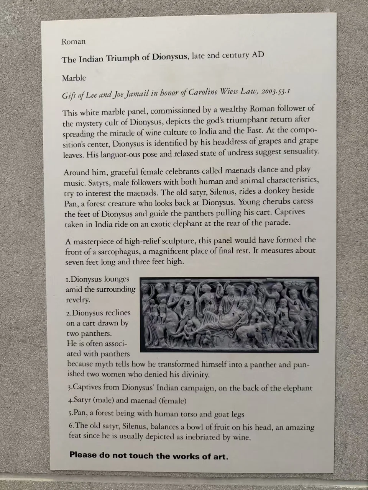
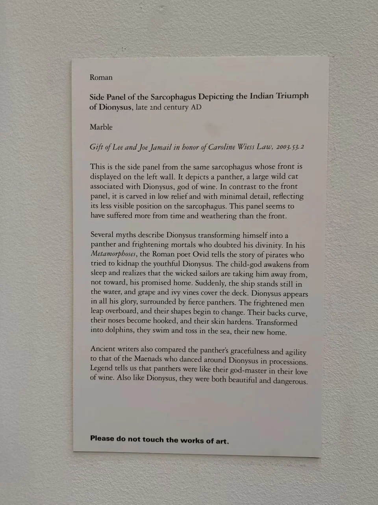

ROMAN SARCOPHAGI / R20
狄俄尼索斯印度凯旋石棺前板及豹侧板
斜倚的酒神在拥挤的行列中占据一段舒展的空间。把前板与旁边的豹侧板连起来看，才能重新意识到：这些起伏的身体曾围绕一口安放死者的石棺。

- 年代
- 180—195年
- 材料
- 大理石
- 收藏
- 休斯顿美术馆
- 观看地点
- 休斯顿美术馆 · 休斯顿
- 馆藏号
- 2003.53.1（前板）；2003.53.2（侧板）
从斜倚的身体认出酒神
酒神的身体从左下向右上展开，胸腹裸露，长长的衣褶绕过膝头，再沿着车座垂下。头上的葡萄与叶冠说明了他的身份。四周人物伸臂、转身、奏乐，他却仰起面孔，在热闹中显得松弛。女随从举起的布帛形成弧线，与他身下层叠的衣褶相接；浅色的大理石表面与深处的阴影，使前后重叠的人物仍能逐一分开。 [26]
馆方把整幅解释为狄俄尼索斯向印度及东方传播葡萄酒文化后的凯旋。左端的大象与背上人物带出远方的想象；右侧则有豹、羊腿的潘神，以及骑驴的老随从西勒诺斯。小爱神穿行在大人物的腿边，抚触酒神的脚、引导牵车的豹。这里的凯旋是神话行列，音乐、动物与醉意一起构成了它的声势。 [26]





转到侧面，雕刻忽然安静下来
单独陈列的豹侧板属于同一口原石棺，现场展签对此有明确说明。前板深刻的手臂和衣褶几乎伸到观者面前，侧板却以较浅的起伏勾出豹的侧身：后腿屈曲，前肢伸展，长尾卷成一圈，颈部抬起。展签将这种简省处理联系到侧面较不显眼的位置。两块板并看，神话也有观看距离和方向之分。 [33]
酒神行列出现在葬具上，使欢乐与死亡处在同一个物件之中。大都会的研究导读将这类图像联系到摆脱现世烦忧及愉悦来世的期待，也强调石棺图像可以有多层含义。现场旧展签把委托者解释为酒神秘仪的追随者；墓主的姓名与具体宗教经历，目前没有独立证据可供追索。眼前可以确定的，是他或家人为最后的居所选择了这支仍在前进的队伍。 [29]


现场展签 · 2张


资料与来源
断代、收藏与文献说明
前板2003.53.1与豹侧板2003.53.2是同一原石棺的两个组件。两块现场展签均记2世纪晚期；现行官网分别将两者定为180—195年。前板尺寸87.6 × 217.8 × 24.1厘米；侧板88.9 × 56.3 × 16.5厘米，均为大理石。 [26] [33]
据馆方来源记录，两板曾在1920年代进入巴伐利亚王储鲁普雷希特收藏，约1960年见于德国私人收藏，1994—2003年经纽约Merrin Gallery，2003年由休斯顿美术馆购入。这是一段近现代收藏记录；原墓址及更早流传经过尚未确认。 [26] [33]
现场展签以Gift表述Lee与Joe Jamail的支持，现行目录则记由他们出资购藏，均注明纪念Caroline Wiess Law。本文入藏方式采用现行目录的购入记录。 [26] [33]